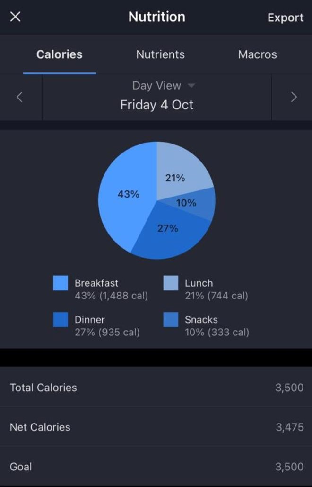

ORIGINAL VISUALISATION
VISUALISATION REDESIGN 1
ORIGINAL VISUALIZATION
VISUALIZATION REDESIGN 2
VISUALISATION ANALYSIS
The pie chart below represents the calorie distribution across meals for a day.
The pie chart graph from MyFitnessPal shows meal breakdowns throughout the day, including the number of calories taken in Breakfast, Lunch, Dinner, and Snacks. The actual chart is labeled with the percentage of total calories each meal comprises. Specific calorie counts along with the percentage that each meal comprises are contained in a color-coded legend below the actual chart. The colored segments identify the types of meals easily, and thus their matched labels in the legend make interpretation very straightforward. The labels for each slice in the pie chart are clear, giving both the percentage and the actual calorie count for each meal, the pie chart, key metrics are included such as Total Calories, Net Calories, and Goal, but does not mention how many more calories left to complete the goal. Although the total calories, net calories and the goal are shown below the chart, there is a complete lack of any visual indication whether the user has reached their goal.
However, it has several design flaws as it is considered as bad graph
- Color Scheme: The colors are too similar, making it hard to distinguish between categories.
- Labeling: Percentages are shown inside the pie chart, but without meal names. It’s unclear what each section represents without constantly referring to the legend.
- Graph Type: A pie chart is not the best choice for comparing meal categories because differences are hard to perceive.
- Text Readability: The labels are small and difficult to read, especially on mobile devices.
from the above visualisation we gathered some data and made improved visualisations:
It can be redesigned in certain ways to gather insights.
The above visualization redesign gives you the clear representation meal names with calorie count is represented for every meal type using stacked plot.With every meal name taken along with percentage and calorie.
The second redesign show the improved version of pie chart that is donut plot. Unlike the pie chart the donut plot describes the total calories left to have to complete the daily task. which is not shown in the original graph.
You can read more about fitnesspal Wikipedia.
ORIGINAL VISUALIZATION
VISUALIZATION REDESIGN 1
ORIGIANL VISUALIZATION
VISUALIZATION REDESIGN 2
VISUALISATION ANALYSIS
The above visualization describes the Plug-in electric cars in use as a proportion of all passenger cars on the road in selected countries and regional markets by the end of 2023. The trend is the visualization that Northern European countries are well ahead in the assimilation curve in the adoption of PEVs, while other regions, notably China and the USA, have room for significant improvement. More likely, government policies and infrastructure development have set up these trends. These countries would continue setting the pace for the transition of the world toward a decarbonized society by transitioning to electric vehicles.
Which is considered as bad graph There are few flaws with the visualization in this image which includes:-
Packed Labels: There are a lot of labels and text within the bars on this chart, like the percentages at top them. This will make the visualization cluttered and hard to read. The horizontal bar with flags in this chart is packed and therefore difficult to identify the countries in a split second.
Double Headers: There are double titles in this chart: “Top markets by PEV sales volume” and “Top markets by PEV market share.” The chart does not clearly distinguish these two groups in the graph. Instead, it plots the two data together where it is not clear what each bar shows.
The Graph Fails to Clearly Show the Categories: There is no distinct graphical difference between “PEV sales volume” and “PEV market share.” The chart tries to combine them without segmentation or explanation of the differences. This can make viewers unsure whether the bars are of market share or volume.
Inconsistent Bar Width: Bars appear to be of consistent width; however, there are flags and labels on each bar that, to some degree, visually distort it and make the true values ambiguous. Sometimes, they are much larger than the bars themselves and not very clear.
Labeling of Y-axis: The label on the y-axis, “Percentage of plug-in passenger cars in use”, is a little ambiguous since this chart is looking at volume and market share. A little clearer labeling would add to the understanding.
Information Overload: The chart tries to convey too much information at once without a clear visual or textual guide on how to interpret it. Simplification of content by focusing on one metric at a time will reduce cognitive overload: for example, either market share or sales volume.
It can be Redesigned as given below to give clearer insights:
In the visualization redesign the y-label is splitted into two: Top Markets by PEV market share and Top Markets by PEV market volume with the countries national flag. Both the graphs are shown in the same window to be compared with each other respectively to their changes in the year December 2023. Where the comparisions can be made easily with their respective shares.
It can be shown in another Redesigned way to get insights.
This visualization map gives a good geographic visualization in comparing PEV volume and shares of different countries. The two metrics and labeling of the countries is done to make the comparison and more user-friendly by using a interactive visualization.PEV volume green colour is been represented and for market share blue colour is represented.
You can read more about plug-in electric vehicles in Norway on Wikipedia.
Original Graph
Redesigned Graph1
Original Graph
Redesigned Graph2

VISUALIZATION ANALYSIS
Visualisation Analysis in Trends
The visualization shows that the global burden because of road traffic accidents consists of 1.2 million deaths each year and 50 million injured. The leading regions of road traffic deaths are Africa, the Americas, South-East Asia, and rather high figures in the Western Pacific, too. As many as 62% of fatalities take place in just 10 countries, headed by India, China, the U.S., Russia, and Brazil. Developing countries account for about 90% of road traffic deaths, while over half of the world’s registered vehicles are owned by high-income countries. Poor-country death rates average about 21.5 per 100,000, with middle-income countries averaging 19.5 per 100,000, while the rate in high-income countries is the lowest, about 10.3 per 100,000. The infographic also focuses on the lack of road safety legislation: just 49% of countries have laws setting a maximum blood alcohol concentration limit, 57% have requirements on use of seatbelts, and only 40% have comprehensive helmet-wearing laws. Vulnerable road users include cyclists, pedestrians, and motorcyclists who account for 50% of those dying from traffic accidents.
FLAWS IN DESIGN
There are several flaws in this visualization that makes it less effective. First, the very basis of comparing population and road traffic deaths with pie and donut charts is misleading, since values cannot be accurately compared, especially when they are very similar. These are better represented by bar charts for comparison. The map and charts overuse the orange color, which results in a lack of contrast that reduces clarity in categorization. This could be very bad for colorblind viewers. Some of the texts, especially in the law-related information, are too tiny to read comfortably. The layout is cluttered; there are so many elements competing in the creation of visual clutter, which is supposed to overwhelm the processing of information. The abuse in visual presentation-mixing maps, pie charts, and icons-all put together on this page-creates further confusion. The regions are not clear on the map; circles obscure them, and their sizes do not relate to the number of deaths that might mislead one’s reasoning. It would have been infinitely better if there wasn’t so much information on one infographic but rather divided into separate visuals: fatalities, vehicle ownership, and laws being just a few.
NEED FOR REDESIGN
There is much information in this visualization that is important, yet the overuse of orange, pie charts, and crowding only detract from effectiveness. The redesign must focus on clarity, reducing cognitive load, enhancing color contrast, and presenting data in a manner that makes comparison and understanding easy.
THE REDESIGNED GRAPHS ARE:-
This redesigned visualization is a side-by-side bar chart comparing vehicle ownership and road traffic deaths across three-income groups: high-income, low-income, and middle-income countries. For each of the three income groups, there are two bars: one showing in blue the percentage of vehicles owned and another showing in red the percentage of road traffic deaths.These high-income countries, which have a huge share of global vehicle ownership, still accounted for relatively small rates of road-traffic deaths.While vehicle ownership is highly concentrated in a few countries, the share of deaths from traffic is disproportionately high in low-income countries. Middle income countries are at a middle point, with reasonable vehicle ownership yet still a high percentage of road traffic deaths.
This is a redesign of the above visualization, in which a stacked bar chart compares high-, middle-, and low-income countries across three categories: Population, Registered Vehicles, and Road Traffic Deaths. It gives the proportional share of the different income groups within such categories. The middle-income countries would represent the highest share of the global population, while high-income countries own the majority of the world’s registered vehicles. However, a disproportionately high number of road traffic deaths are recorded in low- and middle-income countries. High-income countries enjoy better road safety, with fewer road traffic deaths compared to their population. This visualization clearly shows the big gap between vehicle ownership and fatalities from traffic, hence emphasizing that low- and middle-income countries bear the bulk of road traffic deaths when the number of vehicles owned is few.
You can read more about Road Accidents Wikipedia.
NEW_VISUALISATION1 FOR FITNESS PAL(DONUT_CHART)
library(ggplot2) library(tidyverse)
Data for the donut chart
meal_summary <- data.frame( Type = c(“Breakfast”, “Lunch”, “Dinner”, “Snacks”, “Caloreies left”), Calories = c(1488, 704, 905, 303, 100) # Total calories #Percentage = c(43, 21, 27, 10) # Percentages )
meal_summary <- meal_summary %>% mutate(Percentage = round((Calories/3500)*100))
Step 1: Calculate the midpoint of the labels
meal_summary <- meal_summary %>% arrange(desc(Type)) %>% mutate(ypos = cumsum(Percentage) - 0.5 * Percentage)
Step 2: Create the donut chart
ggplot(meal_summary, aes(x = 2, y = Percentage, fill = Type)) + geom_bar(stat = “identity”, width = 1, color = “white”) + coord_polar(“y”, start = 0) + # Make it circular xlim(0.5, 2.5) + # Create a hole in the middle geom_text(aes(y = ypos, label = paste0(Percentage, “%”)), color = “white”, size = 5) + # Percentage labels theme_void() + # Remove background and axis theme(legend.position = “right”) + scale_fill_brewer(palette = “Set2”) + labs(title = “Calories Distribution by Meal Type(NEW_VISUAL)”)
NEW VISUALISATION2 FOR FITNESSPAL(STACKED_PLOT)
library(ggplot2) library(dplyr)
meal_data <- data.frame( Meal_name = c(“Brown Bread”, “Boiled eggs”, “Egg whites”, “Rice”, “Curry”, “Curd”, “Chicken breast”, “Rice”, “Curry”, “Chicken breast”, “Milk”, “Whey protein”, “Almonds”, “Boiled Eggs”, “Banana”, “Oats”, “Peanut butter”), Quantity = c(“2”, “2”, “4”, “2 cups”, “1 bowl”, “100 gms”, “200 gms”, “2.25 cups”, “1 bowl”, “75 gms”, “10 oz”, “66 gms”, “10 gms”, “2”, “1”, “130 gms”, “20 gms”), Calories = c(121, 143, 69, 400, 186, 61, 288, 450, 186, 108, 188, 124, 69, 143, 105, 502, 129), Type = c(“snack”, “snack”, “snack”, “Dinner”, “Dinner”, “Dinner”, “Dinner”, “Lunch”, “Lunch”, “Lunch”, “Breakfast”, “Breakfast”, “Breakfast”, “Breakfast”, “Breakfast”, “Breakfast”, “Breakfast”) )
Step 1: Calculate the percentage of calories for each meal within each Type
meal_data <- meal_data %>% group_by(Type) %>% mutate(Percentage = Calories / sum(Calories) * 100)
custom_colors <- c(“red”, “blue”, “green”, “yellow”, “purple”, “orange”, “pink”, “brown”, “cyan”, “magenta”, “grey”, “darkgreen”, “lightblue”, “darkred”, “lightgreen”)
Step 2: Create the stacked bar plot with calories and percentage labels
ggplot(meal_data, aes(x = Type, y = Calories, fill = Meal_name)) + geom_bar(stat = “identity”) + geom_text(aes(label = paste0(Calories, ” cal (“, round(Percentage, 1),”%)“)), position = position_stack(vjust = 0.5), size = 3) + # Add calorie and percentage labels labs(title =”Calories and Percentage per Meal Type”, x = “Meal Type”, y = “Calories”) + theme_minimal() + scale_fill_manual(values = custom_colors)
NEW VISUALISATION1 FOR PEV VS MARKET SHARES(STACKED_PLOT)
library(ggplot2) library(dplyr) library(gridExtra) library(ggimage) library(tidyverse)
Visualization for figure 1: Data frame for market share
market_data <- data.frame( Country = c(“Norway”, “Iceland”, “Sweden”, “Denmark”, “Netherlands”, “Belgium”, “Finland”, “Switzerland”), Market_Share = c(29, 18, 11, 11, 8.3, 8.2, 8.1, 5.8), Flag_URL = c(‘norway.png’, ‘iceland.png’, ‘sweden.png’, ‘denmark.png’, ‘netherlands.png’, ‘belgium.png’, ‘finland.png’, ‘swiss.png’) )
Horizontal bar chart for market share
plot1=ggplot(market_data, aes(x = reorder(Country, Market_Share), y = Market_Share)) + geom_bar(stat = “identity”, fill = “seagreen”) + geom_image(aes(image = Flag_URL), size = 0.3) + # Removed ‘by’ argument labs(title = “Top Markets by PEV Market Share (December 2023)”, x = “Country”, y = “Percentage of Plug-in Cars in Use”) + theme_minimal()
sales_data <- data.frame( Country = c(“USA”, “World”, “Europe”, “France”, “UK”, “Germany”, “China”), Sales_Volume = c(2.1, 3.2, 3.8, 4.1, 5.0, 5.4, 7.6), Flag_URL1 = c(‘usa.png’,‘world.png’, ‘europe.png’,‘france.png’, ‘uk.png’,‘germeny.png’, ‘china.png’) )
sales volume
plot2=ggplot(sales_data, aes(x = reorder(Country, Sales_Volume), y = Sales_Volume)) + geom_bar(stat = “identity”, fill = “lightblue”) + geom_image(aes(image = Flag_URL1), size = 0.3) + labs(title = “Top Markets by PEV Sales Volume (December 2023)”, x = “Country”, y = “Percentage of Plug-in Cars in Use”) + theme_minimal()
plot
grid.arrange(plot1, plot2, ncol = 1)
NEW VISUALISATION2 FOR PEV VS MARKET SHARES(STACKED_PLOT)
library(plotly)Data for the PEV volume by country
pev_data <- data.frame( Country = c(“USA”, “France”, “UK”, “Germany”, “China”, “Norway”, “Iceland”, “Sweden”, “Denmark”, “Netherlands”, “Belgium”, “Finland”, “Switzerland”), Code = c(“USA”, “FRA”, “GBR”, “DEU”, “CHN”, “NOR”, “ISL”, “SWE”, “DNK”, “NLD”, “BEL”, “FIN”, “CHE”), PEV_Share = c(2.1, 4.1, 5.0, 5.4, 7.6, 29, 18, 11, 11, 8.3, 8.2, 8.1, 5.8) )
Create the choropleth map for PEV Share
fig <- plot_ly(pev_data, type = ‘choropleth’, locations = ~Code, z = ~PEV_Share, text = ~paste(Country, “
PEV Share:”, PEV_Share, “%”), colorscale = ‘Greens’, autocolorscale = FALSE, reversescale = TRUE, marker = list(line = list(color = ‘rgb(180,180,180)’, width = 0.5)), colorbar = list(title = ‘PEV Volume (%)’))
Update the layout for the PEV map
fig <- fig %>% layout( title = ‘PEV Volume by Country’, geo = list( showframe = FALSE, showcoastlines = TRUE, showland = TRUE, landcolor = “rgb(217, 217, 217)”, coastlinecolor = “rgb(180, 180, 180)”, projection = list(type = ‘Mercator’), countrycolor = ‘rgb(180, 180, 180)’, countrywidth = 0.5 ) )
Data for the Market Share by country
market_share <- data.frame( Country = c(“Norway”, “Iceland”, “Sweden”, “Denmark”, “Netherlands”, “Belgium”, “Finland”, “Switzerland”), Code = c(“NOR”, “ISL”, “SWE”, “DNK”, “NLD”, “BEL”, “FIN”, “CHE”), Market_Share = c(29, 18, 11, 11, 8.3, 8.2, 8.1, 5.8) )
Create the choropleth map for Market Share
fig2 <- plot_ly(market_share, type = ‘choropleth’, locations = ~Code, z = ~Market_Share, text = ~paste(Country, “
Market Share:”, Market_Share, “%”), colorscale = ‘Blues’, autocolorscale = FALSE, reversescale = TRUE, marker = list(line = list(color = ‘rgb(180,180,180)’, width = 0.5)), colorbar = list(title = ‘Market Share (%)’))
Update the layout for the Market Share map
fig2 <- fig2 %>% layout( title = ‘Market Share by Country’, geo = list( showframe = FALSE, showcoastlines = TRUE, showland = TRUE, landcolor = “rgb(217, 217, 217)”, coastlinecolor = “rgb(180, 180, 180)”, projection = list(type = ‘Mercator’), countrycolor = ‘rgb(180, 180, 180)’, countrywidth = 0.5 ) )
Create a subplot to show both maps side by side
combined_fig <- subplot(fig, fig2, nrows = 1, margin = 0.05)
Show the combined plot
combined_figshowing global comparsion of deaths by income group(STACKED BAR)
library(ggplot2) library(dplyr)Example data
data <- data.frame( Category = rep(c(“Population”, “Road Traffic Deaths”, “Registered Vehicles”), each = 3), Group = rep(c(“High Income”, “Middle Income”, “Low Income”), times = 3), Value = c(20, 60, 20, 10, 70, 20, 55, 30, 15) )
Create the stacked bar chart
ggplot(data, aes(x = Category, y = Value, fill = Group)) + geom_bar(stat = “identity”, position = “fill”) + scale_y_continuous(labels = scales::percent) + labs(title = “Global Comparison by Income Group”, y = “Proportion (%)”, x = “Category”) + scale_fill_manual(values = c(“High Income” = “darkblue”, “Middle Income” = “orange”, “Low Income” = “red”)) + theme_minimal()
VEHICLE OWNERSHIP TO ROAD DEATHS BY INCOME GROUP(BAR_GRAPH)
library(ggplot2) library(tidyr)Example data for vehicle ownership and road deaths by income group
data <- data.frame( Group = c(“High Income”, “Middle Income”, “Low Income”), Vehicles = c(50, 35, 15), Deaths = c(10, 70, 90) )
Transform the data into long format for side-by-side bars
data_long <- data %>% pivot_longer(cols = c(“Vehicles”, “Deaths”), names_to = “Category”, values_to = “Percentage”)
Create the side-by-side bar plot
ggplot(data_long, aes(x = Group, y = Percentage, fill = Category)) + geom_bar(stat = “identity”, position = “dodge”) + labs(title = “Vehicle Ownership vs. Road Deaths by Income Group”, y = “Percentage (%)”, x = “Income Group”) + scale_fill_manual(values = c(“Vehicles” = “darkblue”, “Deaths” = “red”)) + theme_minimal() + theme(legend.title = element_blank())